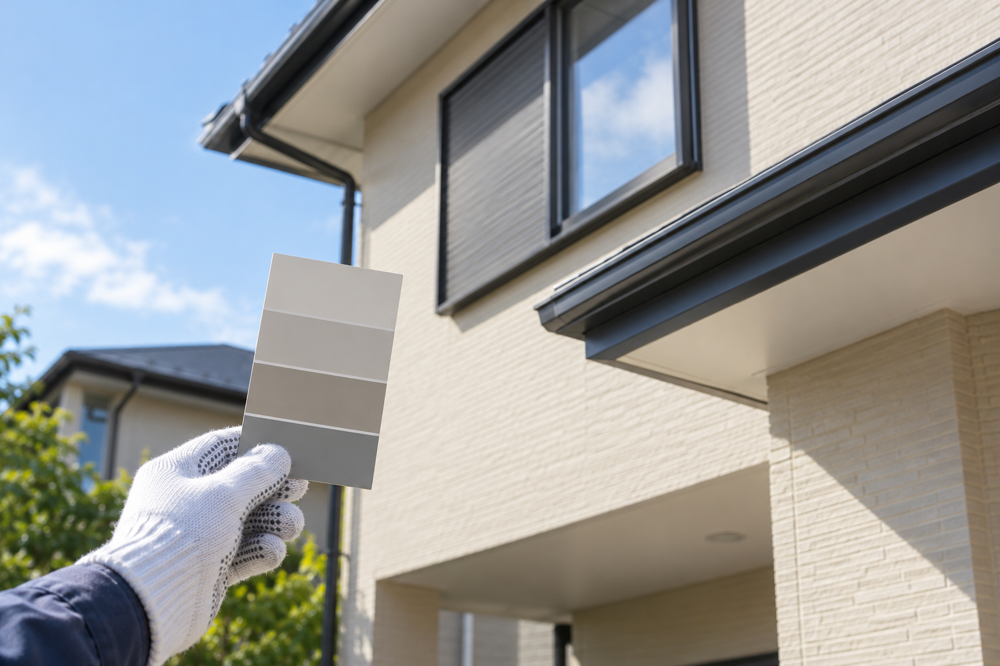

屋根・外壁の塗装
建物の外まわりの塗り替え。
気になっている箇所から、相談内容を整理します。
埼玉県加須市の塗装・シーリング
屋根も、外壁も、室内も。
仕上がりまでの過程を、写真で伝える。
一人で手掛ける塗装とシーリング工事。
公開掲載で案内されている仕事と、
工程報告の方針をまとめました。
相談内容の整理は操作見本です。入力・送信はありません。

撮影 → メール・LINEで報告 → 確認
仕組みを説明するための図解です。施工実績・実際の報告画面ではありません。
塗装とシーリング。
工程の共有まで、ひとつの案内に。
01 / 工事案内
公開掲載で案内されている工事です。
建物の状態やご希望により、対応内容を確認します。
建物の外まわりの塗り替え。
気になっている箇所から、相談内容を整理します。
室内の塗装について。
場所や気になる点を整理して、塗り替えを相談します。
目地などのシーリングについて。
塗装とあわせた相談も、気になる場所から。
02 / 工程を伝える
確認しにくい屋根や足場の上の工程も。
工程ごとに写真をメールやLINEで報告する方針が、
本人の公開掲載で案内されています。
作業の過程を写真に残し、建物のどこを進めているかを伝えます。
確認しにくい箇所も、写真で共有。作業報告と説明を大切にしています。
写真を見て気になる点を整理。報告方法や確認の進め方は、相談時にすり合わせます。
上記は報告方針を説明するための提案図解です。実際の施工写真・メッセージではありません。撮影内容や報告方法は事業者への確認が必要です。
03 / 大家さん・ご紹介で知った方へ
何を頼めるのか。工事中はどう報告してもらえるのか。
相談前に知っておきたいことを、ひとつのページに。
本人の公開掲載に基づくご案内です。
建物の状態や工事内容を確認してから検討できます。
相談内容を整理するための提案項目です。対応地域・日程・工事条件は個別の確認が必要です。
操作見本 / 送信されません04 / 事業案内
塗装・シーリング工事